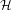
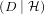
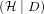
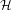
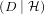
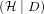
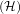
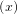

| hypothesis | prior | likelihood | Bayes numerator | posterior |
|  | P | P | P | P |
| A | 0.5 | 0.03125 | 0.015625 | 0.859 |
| B | 0.25 | 0.01020 | 0.00256 | 0.141 |
| C | 0.25 | 0.00001 | 0.0000025 | 0.000137 |
We are answering questions in the material from MIT OpenCourseWare course 18.05, Introduction to Probability and Statistics.
We use documentation in [3] to write the LATEXcode for this document.
In this document we are answering questions Orloff and Bloom ask in [1].
In this section Orloff and Bloom give us the following experimental set up: We have a draw with 5 coins in it. There are two type A, one type B coin, and one type C coin in the drawer.
Orloff and Bloom ask us to calculate the conditional probabilities that we select each type of coin given the data that we toss the coin we selected 5 times, and the result is tails every time.
In our notation for conditional probability, D, our data is the series of events where we toss a coin, and it lands on the tails side 5 times in a row, and A, B, C are the events that we selected a coin of type A, B, or C respectively.
Then Orloff and Bloom are asking us to calculate:
We write a Bayesian update table to calculate these probabilities. Orloff and Bloom give us a hint that we calculate the posterior probabilities in one shot, so we use the probability of tossing tails for each type of coin raised to the fifth power for the prior probability in the table below. We use a cacluator to compute the numbers in the table below.
Note: we learn to write Bayesian update tables in [2].
| hypothesis | prior | likelihood | Bayes numerator | posterior |
|  | P | P | P | P |
| A | 0.5 | 0.03125 | 0.015625 | 0.859 |
| B | 0.25 | 0.01020 | 0.00256 | 0.141 |
| C | 0.25 | 0.00001 | 0.0000025 | 0.000137 |
Therefore:
In this problem, Orloff and Bloom give us a scenario with three different hypotheses; we write the Bayesian update table below to summarize the scenario, and to calculate the posterior probabilities that Orloff and Bloom are asking us for.
| hypothesis | prior | likelihood | Bayes numerator | posterior |
| P | P | P | P | |
| A | 0.0 | 0.80 | 0.0 | 0.0 |
| B | 1 | 0.01 | 0.01 | 1 |
| C | 0.0 | 0.7 | 0.0 | 0.0 |
Orloff and Bloom ask us if any amount of data will change our belief that B is the correct hypothesis. No amount of data will change our belief that B is the correct hypothesis because the Bayes numerator, and therefore the posterior probabilities will always be 0 for the hypotheses A, and C.
F = x2.
[1] Jeremy Orloff and Jonathan Bloom, Reading Questions 11, Available at https://ocw.mit.edu/courses/mathematics/18-05-introduction-to-probability-and-statistics-spring-2014/readings/reading-questions-11/ (Spring 2014)
[2] Jeremy Orloff and Jonathan Bloom, Bayesian Updating with Discrete Priors Class 11, 18.05 Jeremy Orloff and Jonathan Bloom, Available at https://ocw.mit.edu/courses/mathematics/18-05-introduction-to-probability-and-statistics-spring-2014/readings/MIT18˙05S14˙Reading11.pdf (Spring 2014)
[3] StackOverflow.com users barbra beeton and azetina LaTeX code for curly H used for Hausdorff dimension Available at https://tex.stackexchange.com/questions/82931/latex-code-for-curly-h-used-for-hausdorff-dimension (2012/11/16)